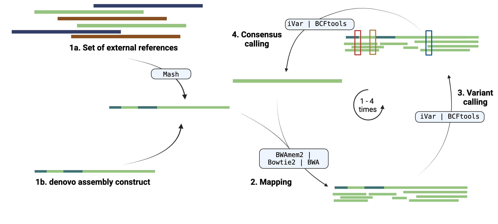
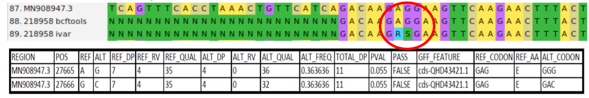

Variant calling and consensus refinement
This subworkflow supports two distinct starting points:
A. External Reference-based Analysis:
References are provided through the samplesheet --mapping_constraints
- Best matching reference genome is selected
- Reads are mapped to these reference genome(s)
- Variants are called from the mappings
- A consensus genome is generated based on the variant calls
B. De novo Assembly Refinement
Uses the (reference-assisted) de novo consensus genomes as input Performs iterative refinement:
- Uses current consensus as reference
- Maps reads back to this reference
- Variants are called from the mappings
- A consensus genome is generated based on the variant calls
- Repeats steps 1-4 for specified number of iterations (default: 2)
Both approaches use the same variant calling and consensus generation methods, but differ in their starting point and purpose.

Info
This schema is a simplification as there are some additional steps:
- Deduplication: (optional) deduplication of reads can be performed with
Picardor if UMIs are usedUMI-tools. - Variant filtering: variant filtering, only variants with sufficient depth and quality are retained for consensus calling (only for BCFtools).
- Mapping statistics: (optional) generate multiple summary statistics of the BAM files.
Info
The variant calling and consensus refinement step can be skipped with the argument --skip_iterative_refinement and --skip_variant_calling, see the parameters iterative refinement section and parameters variant analysis section, respectively, for all relevant arguments to control the variant analysis steps.
1a. Selection of reference
The reference genome(s) can be supplied with the samplesheet --mapping_constraints, here the reference can be a multiFasta file representing a range of genomes that could be valid reference genomes. Here, viralgenie supports a selection procedure where the reference genomes that share the highest number of k-mers with the read files will be selected and kept for read mapping, variant calling and consensus genome reconstruction.
graph LR
A[reference genomes] --> B[Sketching]
B --> C[Distance evaluation]
D[Reads] --> C
C --> E[Reference selection]Tip
As with any mapping tool, the reference genome(s) should be as close as possible to the sample genome(s) to avoid mapping bias, especially for fast mutating viruses. If the reference genome is too different from the sample genome, the reads will likely not map correctly and could result in incorrect variants and consensus. For this reason, use an extensive reference dataset like the RVDB, if possible even the unclustered one.
This procedure is done with Mash where the reads are compared to the reference genomes and the reference genome with the highest number of shared k-mers is selected. The number of shared k-mers can be specified with the --mash_sketch_kmer_size (default: 15), and the number of sketches to create with --mash_sketch_size, the default is 4000.
Tip
- As in any k-mer based method, larger k-mers will provide more specificity, while smaller k-mers will provide more sensitivity. Larger genomes will also require larger k-mers to avoid k-mers that are shared by chance.
2. Mapping of reads
Mapping filtered reads to supercontig or mapping constraints is done with BowTie2,BWAmem2 and BWA.
The comparison of Bowtie2 and BWA-mem was done for Yao et al. (2020) where they found that BWA-MEM2 had a higher mapping rate (faster) and better accuracy. BWA-mem detected more variant bases in mapping reads than Bowtie2. The tool bwa-mem2 is the next version of the bwa-mem algorithm in bwa. It produces alignment identical to bwa and is ~1.3-3.1x faster depending on the use-case, dataset and the running machine.
All three methods are supported to keep protocol compatibility with other pipelines and to allow the user to choose the best method for their data.
The mapping tool can be specified with the
--mapperparameter, the default isbwamem2, in case the intermediate mapper (for intermediate refinement cycles) needs to be different, this can be specified with--intermediate_mapperotherwise it uses the supplied--mappertool.
2.1 Deduplication
Read deduplication is an optional step that can be performed with Picard or if UMIs are used UMI-tools. Unless you are using UMIs it is not possible to establish whether the fragments you have sequenced from your sample were derived via true biological duplication (i.e. sequencing independent template fragments) or as a result of PCR biases introduced during the library preparation. To correct your reads, use picard MarkDuplicates to mark the duplicate reads identified amongst the alignments to allow you to gauge the overall level of duplication in your samples.
So if you have UMI’s, no need to use Picard, instead use UMI-tools to deduplicate your reads. Where instead of mapping location and read similarity, UMI-tools uses the UMI to identify PCR duplicates.
Specify
--deduplicateto enable deduplication, the default istrue. If UMIs are used, specify--with_umiand--umi_deduplicate 'mapping' | 'both'to enable UMI-tools deduplication. UMIs can be in the read header, if it is not in the header specify--skip_umi_extract false, the default istrue.By default the UMIs are separated in the header by ':' if this is different, specify with "--umi_separator 'YOUR_SEPARATOR'".
2.2 Mapping statistics
Viralgenie uses multiple tools to get statistics on the variants and on the read mapping. These tools are:
samtools flagstatto get the number of reads that are mapped, unmapped, paired, etc.samtools idxstatsto get the number of reads that are mapped to each reference sequence.samtools statsto collect statistics from BAM files and outputs in a text format.picard CollectMultipleMetricsto collect multiple metrics from a BAM file.mosdepthto calculate genome-wide sequencing coverage.
There is a little overlap between the tools, but they all provide a different perspective on the mapping statistics.
By default, all these tools are run, but they can be skipped with the argument
--mapping_stats false. In case the intermediate mapping statistics (for intermediate refinement cycles) don't need to be determined set--intermediate_mapping_stats false.
3. Variant calling
Variant calling is done with BCFTools and iVar, here a SNP will need to have at least a depth of 10 and a base quality of 20.
BCFtools is a set of utilities that manipulate variant calls in the Variant Call Format (VCF) and its binary counterpart BCF. iVar is a computational package that contains functions broadly useful for viral amplicon-based sequencing while each of iVar functions can be accomplished using existing tools, iVar contains an intersection of functionality from multiple tools that are required to call iSNVs and consensus sequences from viral sequencing data across multiple replicates.
There are multiple studies on the benchmarking of variant callers as this is an area with active development. For instance Bassano et al. (2023) noticed that BCFtools called mutations with higher precision and recall than iVar. However, the reason behind this is that iVar has a lower precision than the others within their setup as it detects a lot of ‘additional’ variants within the sample, resulting in a higher amount of false positives but also true positives.
Tip
Bcftools doesn't handle well multiallelic sites, so if you have a lot of multiallelic sites, iVar is the better choice. iVar is also the better choice if you have a lot of low-frequency variants.
The variant caller can be specified with the
--variant_callerparameter, the default isivar. In case the intermediate variant caller (for intermediate refinement cycles) needs to be different, this can be specified with--intermediate_variant_callerotherwise it uses the supplied--variant_callertool.
Variant filtering
The following steps are implemented for variant filtering.
- [only for
BCFtools]: split up multiallelic sites into biallelic records and SNPs and indels should be merged into a single record. - Variant filtering: filter out variants with an allelic depth of less than 75% of the average depth of the sample.
- [only for
iVar]: strand bias correction & collapsing variants belonging to the same codon.
Info
If these filtering options are not to your liking, you can modify all of them. See the section on configuration for more information on how to do so.
4. Consensus calling
The consensus genome is updated with the variants of sufficient quality, either the ones determined previously in variant calling and filtering for the --consensus_caller bcftools or they are redetermined for ivar.
There are again a couple of differences between the iVar and BCFtools:
- Low frequency deletions in iVar.
Areas of low frequency are more easily deleted and not carried along with iVar, this can be a bad thing during the iterative improvement of the consensus but is a good thing at the final consensus step.
- Ambiguous nucleotides for multi-allelic sites in iVar.
iVar is capable to give lower frequency nucleotides ambiguous bases a summarising annotation instead of 'N'. For example at a certain position, the frequency of 'A' is 40% and of 'G' is 40%. Instead of reporting an 'N', iVar will report 'R'.

- Ambiguous nucleotides for low read depth.
In case of a low read depth at a certain position, if it doesn't get flagged by bcftools during variant calling, it will not be considered as a variant and the consensus will not be updated. iVar will update the consensus with an ambiguous base in case of low read depth.

The consensus caller can be specified with the
--consensus_callerparameter, the default isivar. The intermediate consensus caller (for intermediate refinement cycles) can be specified with--intermediate_consensus_callerand is by defaultbcftools.